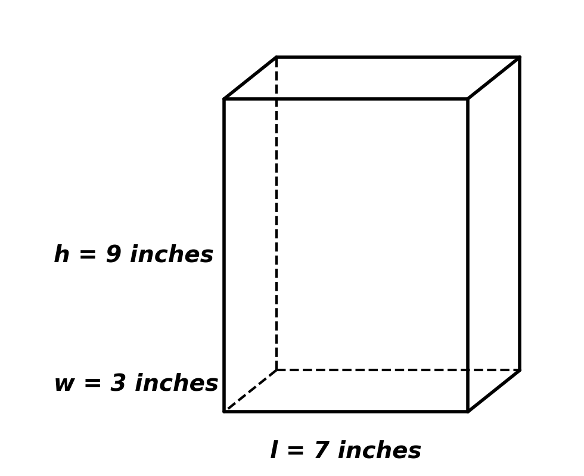

Common Core 2 Question Bank
Primary Standard: 7.RP.2a
Last week, Marcy bought 2 pounds of pistachio nuts and paid $7.96.
This week she bought only \( \frac{1}{2} \) of a pound and paid $1.99.
YES or NO: Is the relationship between the pounds of pistachio nuts and the cost a proportional relationship?
Show your work.
1 pt. for the correct answer
1 pt. for showing work that could lead to the correct answer
Answer: Yes.
Rationale:
Unit rate from week 1:
\[
\frac{7.96}{2} = 3.98
\]
Unit rate from week 2:
\[
\frac{1.99}{0.5} = 3.98
\]
The unit rate is constant at \$3.98 per pound.
Since the ratio of cost to pounds is constant, the relationship is proportional.
YES or NO: Do the values in the table represent a proportional relationship?
Show your work.
| x |
3 |
4 |
5 |
6 |
7 |
| y |
22 |
28 |
34 |
40 |
46 |
Answer: Yes.
The ratio \( \frac{y}{x} \) is constant for each ordered pair:
\[
\frac{22}{3} = \frac{28}{4} = \frac{34}{5} = \frac{40}{6} = \frac{46}{7}.
\]
Since the ratios are equal, the relationship is proportional.
A candy store’s specialty is taffy. Customers can fill a bag with taffy and the price is based on how much the candy weighs. The store charges $2.00 for 10 ounces of taffy.
A. Complete the table.
| Amount of taffy (ounces) |
2 |
5 |
10 |
12 |
15 |
20 |
| Price ($) |
|
|
$2.00 |
|
|
$4.00 |
1 pt. for the correct answers
B. Graph the values from the table you completed above. Let x represent the number of ounces and y represent the price in dollars.
1 pt. for the correct graph
Answer:
The unit rate is
\[
\frac{2.00}{10} = 0.20
\]
so the price is \$0.20 per ounce.
Completed Table:
| Ounces |
2 |
5 |
10 |
12 |
15 |
20 |
| Price |
$0.40 |
$1.00 |
$2.00 |
$2.40 |
$3.00 |
$4.00 |
Rationale:
Since the price per ounce is constant at \$0.20, the relationship is proportional.
The graph would be a straight line through the origin with slope 0.20.
Circle the table that does NOT represent a proportional relationship.
Explain why it is not proportional.
Answer: The second table does NOT represent a proportional relationship.
Rationale:
In the first table, the ratio \( \frac{y}{x} = 5 \) for all nonzero values of x, so it is proportional.
In the second table, the ratios are:
\[
\frac{1}{1} = 1, \quad \frac{9}{3} = 3, \quad \frac{25}{5} = 5
\]
The ratios are not constant, so the relationship is not proportional.
Greg has been buying apples for 69¢ each from the corner grocer for years.
Recently, the grocer started charging 5¢ for each plastic bag the customer takes to put his apples in.
Greg always takes just one plastic bag, even when it seems like he has a lot of apples.
a. If x represents the number of apples a customer is buying, and y is the total cost, write an equation representing this situation.
b. Could Greg ever be charged $4.32 for his apples? Why or why not? Explain.
Answer:
a) \( y = 0.69x + 0.05 \)
b) No.
Rationale:
The cost is 69¢ per apple plus a fixed 5¢ bag fee.
This creates the equation:
\[
y = 0.69x + 0.05
\]
Because of the added constant 0.05, the relationship is not proportional (it does not pass through the origin).
To test $4.32:
\[
4.32 = 0.69x + 0.05
\]
\[
4.27 = 0.69x
\]
\[
x = \frac{4.27}{0.69} \approx 6.19
\]
Since x must be a whole number of apples, $4.32 is not possible.
Two employees of Frontier Fence Company can install 100 feet of fence in two days.
a. What is the unit rate for one employee?
b. Write a proportion to show the relationship between this rate and 150 feet of fence.
c. At this same rate, how many employees are needed to install 150 feet of fence in one day? Show your work.
Answer:
a) 25 feet per day per employee
b) \( \frac{25}{1} = \frac{150}{x} \)
c) 6 employees
Rationale:
Two employees install 100 feet in two days.
That is:
\[
\frac{100 \text{ feet}}{2 \text{ employees} \times 2 \text{ days}} = 25 \text{ feet per employee per day}
\]
So the constant of proportionality is 25 feet per employee per day.
To install 150 feet in one day:
\[
\frac{150}{25} = 6
\]
So 6 employees are needed.
Solve.
a. Tina drove 108 miles and used 4.5 gallons of gasoline. Compute the unit rate. Show your work.
b. If 17 oranges cost $3.23, compute the unit rate. Show your work.
Answer:
a) 24 miles per gallon
b) 0.19 per orange
Rationale:
a)
\[
\frac{108 \text{ miles}}{4.5 \text{ gallons}} = 24 \text{ miles per gallon}
\]
Divide 108 by 4.5 to find the unit rate.
b)
\[
\frac{3.23}{17} = 0.19
\]
Divide total cost by number of oranges to find cost per orange.
You have five blue candies, six green candies, nine yellow candies, and three red candies in a bag.
You shake the bag, reach in, and pull out a candy at random.
What is the probability that the candy will be green? Show your work.
Answer: \( \frac{6}{23} \)
Rationale:
Total candies:
\[
5 + 6 + 9 + 3 = 23
\]
Number of green candies:
\[
6
\]
Probability:
\[
\frac{6}{23}
\]
The probability is between 0 and 1, so the answer is reasonable.
Find the probability of each event.
a. Rolling a number less than five on a standard number cube.
b. Drawing a blue marble from a bag of 18 marbles, three of which are blue.
Answer:
a) \( \frac{4}{6} = \frac{2}{3} \)
b) \( \frac{3}{18} = \frac{1}{6} \)
Rationale:
a. A standard number cube has 6 outcomes (1–6).
Numbers less than five are 1, 2, 3, 4 → 4 favorable outcomes.
\[
\frac{4}{6} = \frac{2}{3}
\]
b. There are 18 total marbles and 3 are blue.
\[
\frac{3}{18} = \frac{1}{6}
\]
Both probabilities are between 0 and 1, which is consistent with 7.SP.5.
Evaluate the expressions. Show your work.
\( 5\frac{1}{2} + (-3.25) \)
\( -283 + (-35) \)
\( -4\frac{1}{4} - \left( 6\frac{1}{3} \right) \)
Answers:
1) \( 2.25 \)
2) \( -318 \)
3) \( -10\frac{7}{12} \)
Rationale:
1.
\[
5\frac{1}{2} = 5.5
\]
\[
5.5 + (-3.25) = 2.25
\]
2.
\[
-283 + (-35) = -318
\]
3.
Convert to improper fractions:
\[
-4\frac{1}{4} = -\frac{17}{4}
\]
\[
6\frac{1}{3} = \frac{19}{3}
\]
Common denominator of 12:
\[
-\frac{17}{4} = -\frac{51}{12}
\]
\[
\frac{19}{3} = \frac{76}{12}
\]
\[
-\frac{51}{12} - \frac{76}{12} = -\frac{127}{12}
\]
Convert to mixed number:
\[
-10\frac{7}{12}
\]
The number line shows record low temperatures for four states.
What is the difference, in degrees, between the record low temperatures in Hawaii and South Dakota?
Answer: 70 degrees
Rationale:
Hawaii: \( 12^\circ \text{F} \)
South Dakota: \( -58^\circ \text{F} \)
Difference:
\[
12 - (-58)
\]
Adding the opposite:
\[
12 + 58 = 70
\]
The temperatures differ by 70 degrees.
\[
-\frac{3}{4} \div \frac{1}{2}
\]
\[
-5.25 \div (-5)
\]
\[
\frac{5}{6}(-66)
\]
\[
-2(10)(-3)
\]
Answers:
\( -\frac{3}{2} \)
\( 1.05 \)
\( -55 \)
\( 60 \)
Rationale:
1) Divide by reciprocal:
\( -\frac{3}{4} \times \frac{2}{1} = -\frac{3}{2} \)
2) Negative ÷ negative = positive:
\( 5.25 \div 5 = 1.05 \)
3) Multiply fraction and integer:
\( -66 \div 6 = -11 \), then \( -11 \times 5 = -55 \)
4) Multiply stepwise:
\( -2 \times 10 = -20 \), then \( -20 \times -3 = 60 \)
Solve. Show your work.
Ted weighs 30 pounds. Royce weighs 3 pounds more than twice Ted’s weight.
How much does Royce weigh?
Answer: 63 pounds
Rationale:
Royce’s weight:
\[
2(30) + 3
\]
\[
60 + 3 = 63
\]
Solve. Show your work.
Tasha has eight more fish than Oscar, who has twice as many fish as Cecilia.
If altogether they have 148 fish, how many fish do each of them have?
Answer:
Cecilia = 28
Oscar = 56
Tasha = 64
Rationale:
Let Cecilia = x
Oscar = 2x
Tasha = 2x + 8
Total:
\[
x + 2x + (2x + 8) = 148
\]
\[
5x + 8 = 148
\]
\[
5x = 140
\]
\[
x = 28
\]
Cecilia = 28
Oscar = 56
Tasha = 64
Solve. Show your work.
The length of a rectangular field is 7 meters less than four times its width.
The perimeter is 136 meters.
Calculate the length and the width of the field.
Answer:
Width = 15 meters
Length = 53 meters
Rationale:
Let width = x
Length = 4x − 7
Perimeter formula:
\[
2L + 2W = 136
\]
Substitute:
\[
2(4x - 7) + 2x = 136
\]
\[
8x - 14 + 2x = 136
\]
\[
10x - 14 = 136
\]
\[
10x = 150
\]
\[
x = 15
\]
Length:
\[
4(15) - 7 = 60 - 7 = 53
\]
Calculate the circumference of the circle. Show your work.
Answer:
\( C \approx 57.8 \) units
Rationale:
Formula:
\[
C = 2\pi r
\]
Substitute:
\[
C = 2\pi(9.2)
\]
\[
C = 18.4\pi
\]
\[
C \approx 18.4(3.14)
\]
\[
C \approx 57.8
\]
What is the area of the shaded region within the square?
Answer:
\( 324 - 81\pi \) square meters
\( \approx 69.5 \text{ m}^2 \)
Rationale:
Square area:
\[
18^2 = 324
\]
Radius of circle:
\[
r = 9
\]
Circle area:
\[
\pi r^2 = \pi(9^2) = 81\pi
\]
Shaded region:
\[
324 - 81\pi
\]
Approximate:
\[
324 - 254.5 \approx 69.5
\]
Below is a picture of a cylindrical grain silo.
What is the volume of the cylinder given the height is 50 feet?
Round your answer to the nearest whole number.
Answer:
\( 15,708 \text{ ft}^3 \)
Rationale:
Diameter = 20 ft → radius = 10 ft
\[
V = \pi r^2 h
\]
\[
V = \pi (10^2)(50)
\]
\[
V = \pi (100)(50)
\]
\[
V = 5000\pi
\]
\[
5000\pi \approx 15,708
\]
Rounded to the nearest whole number:
\[
15,708 \text{ ft}^3
\]
Calculate the area of the shaded portion of the shape below.
Answer:
\( 36\pi \)
Rationale:
The shaded region consists of two semicircles, which together form one full circle.
Diameter = 12 → radius = 6
\[
A = \pi r^2
\]
\[
A = \pi (6^2)
\]
\[
A = 36\pi
\]
If approximated:
\[
36\pi \approx 113.1
\]
Huong covered the box to the right with sticky-backed decorating paper.
The paper costs 3¢ per square inch.
How much money will Huong need to spend on paper?

Answer:
$6.66
Rationale:
Surface area of rectangular prism:
\[
SA = 2lw + 2lh + 2wh
\]
Given:
\( l = 7 \), \( w = 3 \), \( h = 9 \)
\[
SA = 2(7 \cdot 3) + 2(7 \cdot 9) + 2(3 \cdot 9)
\]
\[
SA = 2(21) + 2(63) + 2(27)
\]
\[
SA = 42 + 126 + 54
\]
\[
SA = 222 \text{ square inches}
\]
Cost:
\[
222 \times 0.03 = 6.66
\]
Correction:
3¢ = 0.03 dollars
\[
222 \times 0.03 = 6.66
\]
Final Answer:
$6.66